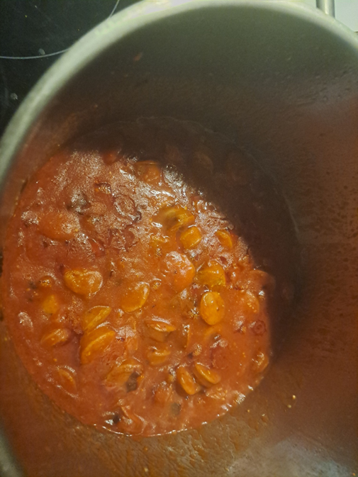

Rougail Saucisses

Instructions
Prepare the Sausages
Cut the sausages into bite-sized pieces (about 2-inch chunks). If using smoked sausages, you can blanch them briefly in boiling water to remove excess salt, then drain.
Sauté the Aromatics
Heat oil in a large skillet or Dutch oven over medium heat. Add the sliced onions and cook until softened and translucent, about 5-7 minutes. Add minced garlic and chopped chili peppers, sauté for 1-2 minutes until fragrant.
Build the Sauce
Add the diced tomatoes and tomato paste to the pan. Stir well and cook for 5 minutes until tomatoes begin to break down. Add thyme and bay leaf. Season with salt and pepper.
Simmer and Serve
Add the sausage pieces to the sauce and stir to coat. Reduce heat to low, cover, and simmer for 15-20 minutes, stirring occasionally. The sauce should thicken and the flavors meld together. Remove bay leaf and thyme sprig. Garnish with fresh herbs and serve hot over white rice.